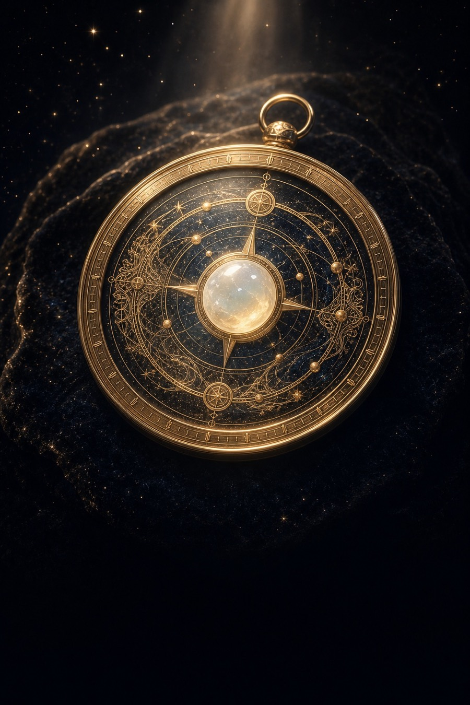

深度发展报告
正在生成组合身份
正在整理这张盘最值得先看的核心判断。
HTML 文件可离线阅读，包含完整五章；不包含问星记录。PDF 请在浏览器打印窗口中选择“另存为 PDF”。已下载文件无法远程撤回，请妥善保管。
报告资料管理 · 点击展开
这份报告及其问星记录将从账号中永久删除，无法恢复。删除内容不等于申请退款；交易记录仍按规定期限保存。已下载到设备的文件需自行删除。
已按你的出生信息生成 ·

本 命 信 物
正在生成组合身份
正在整理这张盘最值得先看的核心判断。
HTML 文件可离线阅读，包含完整五章；不包含问星记录。PDF 请在浏览器打印窗口中选择“另存为 PDF”。已下载文件无法远程撤回，请妥善保管。
这份报告及其问星记录将从账号中永久删除，无法恢复。删除内容不等于申请退款；交易记录仍按规定期限保存。已下载到设备的文件需自行删除。

卡片包含今日日期、文化意象、适合与暂缓事项、知星品牌及官网二维码；页面正文会同时显示可复制的文字结果。
出生日期、时间、城市、排盘性别和称呼用于生成个人文化图谱。本机最多保存 2 张基础图谱，保留到你主动删除；可在“我的资料”删除，或在隐私中心撤回本机处理同意。清理浏览器数据也会移除本机图谱。已购深度报告按账号另行保存，不占这 2 个名额。本次确认不自动开启账号、云端同步或第三方大模型处理。
本次会把个人文化图谱摘要、你的问题、必要的最近问答摘要和今日知星卡，经知星后端发送给 DeepSeek 大模型生成答复。完整答案先写入账号存档，成功交付后才消耗 1 次问星；模型失败、超时或答案未成功持久化时不扣次数。模型服务方会按其服务规则处理输入与输出。请不要填写身份证号、银行卡号、住址、联系方式或医疗诊断。